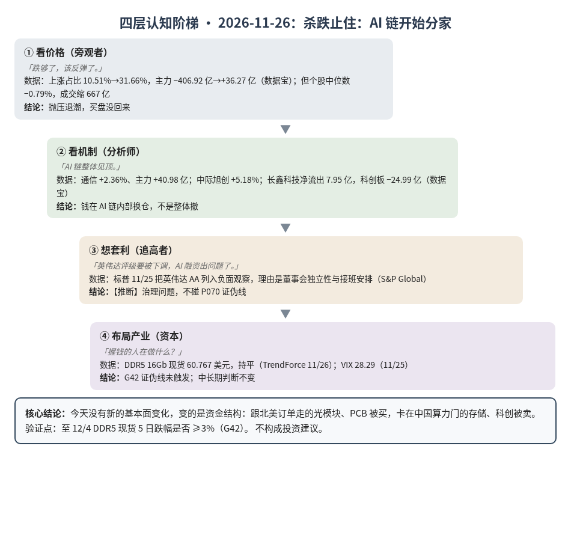
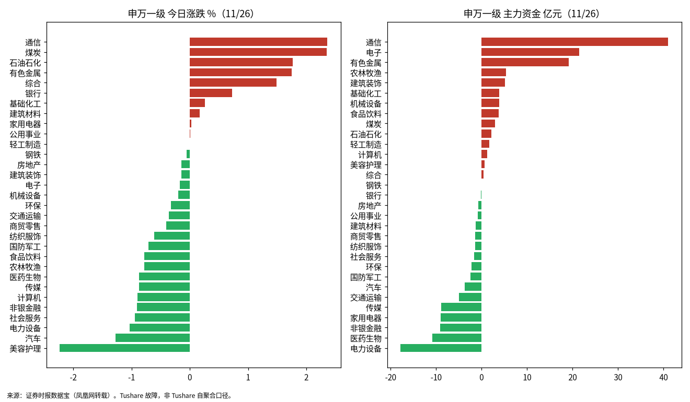
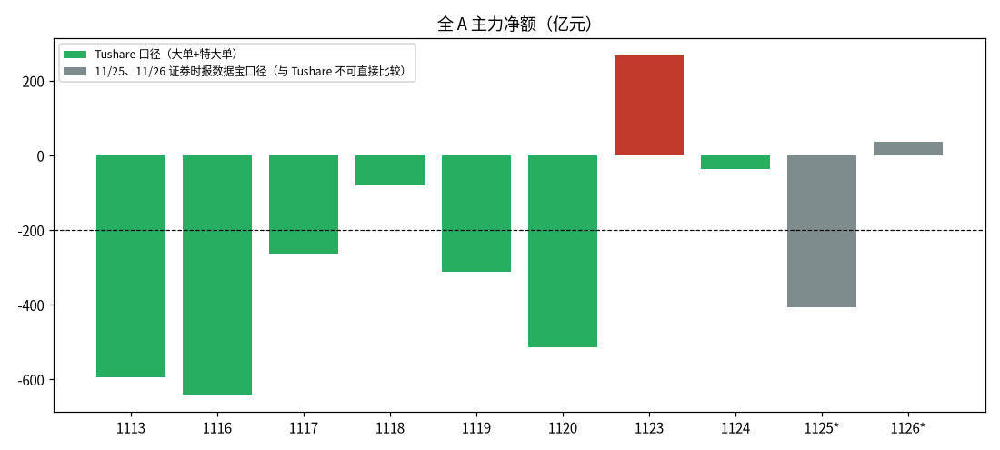

A股投研日报 · 2026-11-26（变化点版）
- 主线
- 杀跌止住但没反弹，AI 链内部换仓：光模块、PCB 进，存储、科创出
- 最重要变化点
- 上涨占比 10.5%→31.7%，主力由净流出 406.9 亿转净流入 36.3 亿（数据宝）；科创50 再跌 1.36%
- 机制含义
- 【推断】钱按「跟北美云厂订单走」还是「卡在中国算力门」给 AI 链分家，昨天的分化落到了价格上
- 下一个观察点
- 至 12/4 DDR5 16Gb 现货 5 日跌幅 ≥3%（G42 证伪线）；11/28 早看 VIX 是否收上 30（11/25 为 28.29）
本报告为基于公开数据的研究分析，不构成投资建议。
方法：只写和昨天、上周比的变化点。Tushare 故障（IP 数量超限），行情改用新浪、证券时报数据宝、金十等（见附录）。不构成投资建议。
今日市场概况
上证 +0.01% 收 3,476.88，深成 −0.02%，创业板 +0.29%，科创50 −1.36% 收 1,169.99，沪深300 +0.06%（新浪行情）。三市成交约 1.33 万亿，缩 667 亿（21 经济网），约为 20 日均的 82%（推算）。主力净流入 36.27 亿，科创板净流出 24.99 亿（数据宝）。隔夜纳指 −0.62%、英伟达 −3.91%（CNBC），VIX 收 28.29（CBOE）；KOSPI +0.29%，韩国央行当日加息（머니투데이）。世界指标今日天气沿用 11/25：整体多云，五盏灯本周没有变化。
变化点
-
AI 链分家：通信 +2.36%，主力净流入 40.98 亿居首，中际旭创 +5.18%；长鑫科技仍是个股净流出第一（−7.95 亿），科创板净流出 24.99 亿（数据宝）。为什么重要：光模块、PCB 的订单来自北美云厂，存储和国产芯片跟着中国 GPU 到货走。市场不再整条 AI 链一起撤，而是分开定价。与 G06「两道门」方向一致，但只是价格层面，未入账；P023 北美需求未见下修。
-
抛压退潮，买盘没回来：上涨占比回到 31.7%，但个股中位数仍 −0.79%（新浪全 A 5,577 只计算），成交继续缩。昨天的验证点「至 11/27 科创50 收回 1,250」还差 6.8%，基本落空，说明抛压不只来自美股。
-
英伟达被列入负面观察：标普 11/25 把英伟达 AA 评级列入负面信用观察，理由是黄仁勋复职后的董事会独立性与接班安排，不是需求或融资（S&P Global）。推断不碰 P070 的三条证伪线（四大云下修、小云 CDS 超 1,000bp、取消 GPU 订单），只算情绪面。
中长期展望
不变（G06、G42、P070 的判断与证伪线均未移动）。
本报告为基于公开数据的研究分析，不构成任何投资建议。

一句话总结：跌势止住，但钱只回到了跟北美订单走的那一段。
附录：市场数据（证据底稿）


指数（新浪行情 hq.sinajs.cn，2026-11-26 收盘；成交为指数口径）
| 指数 | 收盘 | 今日% | 成交(亿) |
|---|---|---|---|
| 上证指数 | 3,476.88 | +0.01 | 6,133.33 |
| 深证成指 | 10,084.04 | −0.02 | 7,040.44 |
| 创业板指 | 2,189.82 | +0.29 | 3,335.41 |
| 科创50 | 1,169.99 | −1.36 | 733.77 |
| 上证50 | 2,753.71 | +0.07 | 1,069.51 |
| 沪深300 | 3,900.55 | +0.06 | 3,713.98 |
| 中证500 | 5,863.34 | −0.46 | 2,116.06 |
| 中证1000 | 5,531.84 | −0.18 | 2,404.54 |
| 北证50 | 752.44 | −0.45 | 87.69 |
市场宽度与资金
| 项目 | 读数 | 来源 |
|---|---|---|
| 三市成交额 | 约 1.33 万亿，较上日缩 667 亿 | 21 经济网 |
| 沪深成交额 | 13,173.77 亿，缩 657.2 亿 | 金十数据 |
| 20 日均成交 | 约 16,204 亿（今日约为其 82%） | 推算：Tushare 10/30–11/24 共 18 日 + 11/25 13,927 + 今日约 13,260 |
| 上涨 / 下跌 | 1,766（31.66%）/ 3,642 | 证券时报数据宝（凤凰网转载） |
| 个股涨跌中位数 | −0.79% | 新浪全 A 行情，5,577 只有成交个股计算 |
| ≥+9.8% / ≤−9.8%（近似涨跌停） | 81 / 19 | 同上 |
| 全 A 主力净额 | +36.27 亿；创业板 +2.65 亿，科创板 −24.99 亿，沪深300 成份 +19.48 亿 | 证券时报数据宝 |
| 申万一级 | 10 个上涨；通信 +2.36%（主力 +40.98 亿）、煤炭 +2.35%；美容护理 −2.23%、汽车 −1.27%；电力设备主力 −17.82 亿 | 证券时报数据宝 |
| 个股主力 | 中际旭创 +16.30 亿居首；长鑫科技 −7.95 亿居净流出首位 | 证券时报数据宝 |
| 美股 11/25 | 标普 7,182.78（−0.25%），纳指 23,585.80（−0.62%），道指 +0.33%；英伟达 −3.91%；11/26 感恩节休市 | CNBC、中央社 |
| VIX | 28.29（11/25），11/24 为 26.36 | CBOE VIX_History.csv |
| KOSPI | 4,711.21（+0.29%）；韩国央行 11/26 加息 | 머니투데이、韩联社 |
| DDR5 16Gb 现货 | 60.767 美元（11/26，持平） | TrendForce |
VIX 预警：warning.py 数据只到 11/23（26.62）；CBOE 官方 11/25 收盘 28.29，未收上 30、未首穿 20/25/30/35/40，按规则不写预警行。
总账：今日未改。打分：新打分 0 条 / 已到期未打分 0 / 14 天内到期 1（P071，12/10）/ 累计 Brier 0.0225（已打分 1 条）。
接口状态（今日）：Tushare 返回「IP 数量超限，最大数量为 10 个」，trade_cal 与行情接口均为空，交易日改由新浪行情确认（上证 2026-11-26 有成交）；fetch_v3.py 未产出，行情改用新浪、数据宝、金十、21 经济网。世界指标 update.py 今晚未跑完，五盏灯沿用 11/25 读数。龙虎榜、北向、融资余额、指数估值未取得。